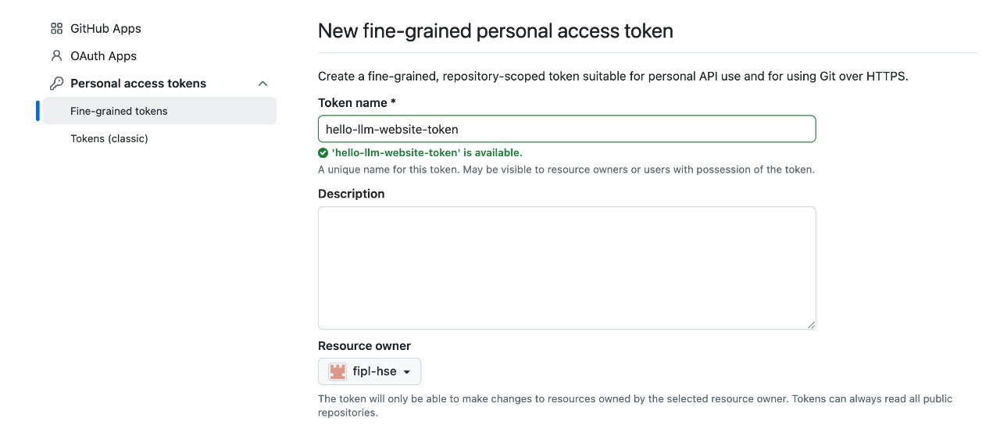
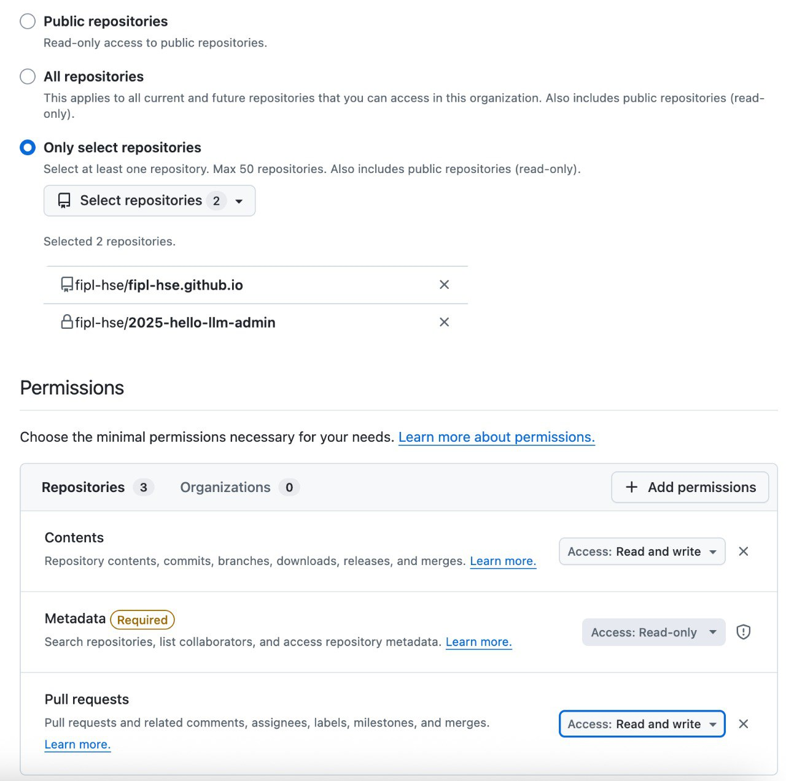
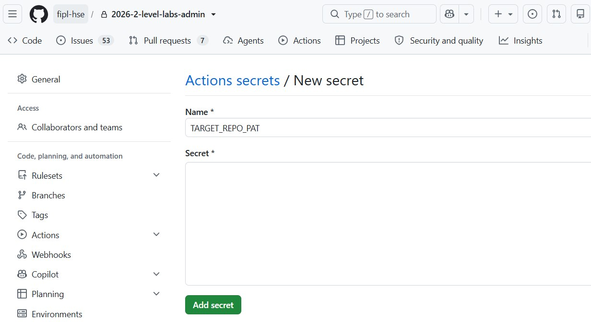

Синхронизация документации админа и сайта
Инструмент DOCSYNC переносит файлы из админского репозитория в
репозиторий сайта
и создаёт там Пулл Реквест. Какие файлы и куда переносить, задаётся
в project_config.json админского репозитория.
Important
Источником правды является админский репозиторий. Если файл на сайте был исправлен напрямую, синхронизация перезапишет эти правки. Перед запуском перенесите такие правки в админский репозиторий.
Настройка списка файлов
Список файлов задаётся в поле doc_sync_config файла project_config.json.
Пути указываются относительно корня репозитория: source в админском
репозитории, target в репозитории сайта.
На примере лабораторной работы lab_1_classify_profile:
"doc_sync_config": [
{
"source": "README.rst",
"target": "source/docs/labs_2026/general_info.rst"
},
{
"source": "lab_1_classify_profile/__init__.py",
"target": "lab_1_classify_profile/__init__.py"
},
{
"source": "lab_1_classify_profile/main_stub.py",
"target": "lab_1_classify_profile/main.py"
},
{
"source": "lab_1_classify_profile/README.rst",
"target": "source/docs/labs_2026/labs/lab_1_classify_profile/lab_1.rst"
},
{
"source": "lab_1_classify_profile/lab_1_classify_profile.api.rst",
"target": "source/docs/labs_2026/labs/lab_1_classify_profile/lab_1_classify_profile.api.rst"
},
{
"source": "lab_1_classify_profile/assets/description.png",
"target": "source/docs/labs_2026/labs/lab_1_classify_profile/assets/description.png"
}
]
Переносятся только файлы, которые отличаются от main репозитория сайта.
Создание токена
Для работы инструмента нужен fine-grained токен GitHub.
Откройте страницу создания токена. Укажите имя токена и выберите
fipl-hseв полеResource owner:
В разделе
Repository accessвыберитеOnly select repositoriesи укажите репозиторий сайта и админский репозиторий. В разделеPermissionsвыдайте праваRead and writeдляContentsиPull requests:
Для запуска через CI добавьте токен в секреты админского репозитория (
Settings->Secrets and variables->Actions->New repository secret) под именемTARGET_REPO_PAT:
Запуск вручную
Установите GitHub CLI и quality-control
(устанавливается вместе с зависимостями админского репозитория из requirements_qa.txt).
Передайте токен через переменную окружения GH_TOKEN:
export GH_TOKEN=<токен>
В PowerShell:
$env:GH_TOKEN = "<токен>"
Запустите синхронизацию, указав админский репозиторий и номер Пулл Реквеста в нём:
fiplconfig.sync_docs --repo-name fipl-hse/2026-2-level-labs-admin --pr-number 100
Если Пулл Реквест открыт, файлы берутся из его ветки, если замёржен — из main.
В репозитории сайта будет создана ветка
auto-update-from-<админский репозиторий>-pr-<номер> и Пулл Реквест.
При повторном запуске ветка обновится, а в Пулл Реквест будет добавлен комментарий.
Дополнительные аргументы:
--dry-run— только показать, какие файлы изменятся. Коммит, пуш и Пулл Реквест не создаются. Рекомендуется запускать перед настоящей синхронизацией.--work-dir <папка>— папка, в которую клонируется репозиторий сайта. По умолчанию используется временная папка. Если в указанной папке уже есть клон сайта, он будет удалён и склонирован заново.
После запуска с --dry-run изменения можно посмотреть в клоне сайта:
git -C <папка>/fipl-hse.github.io diff --cached
После синхронизации проверьте и замёржите автоматически созданный Пулл Реквест в репозитории сайта.
Запуск через CI
Note
WIP.